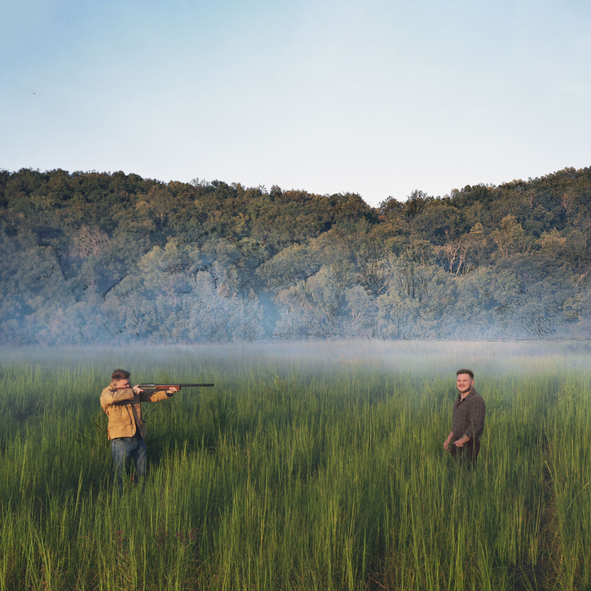
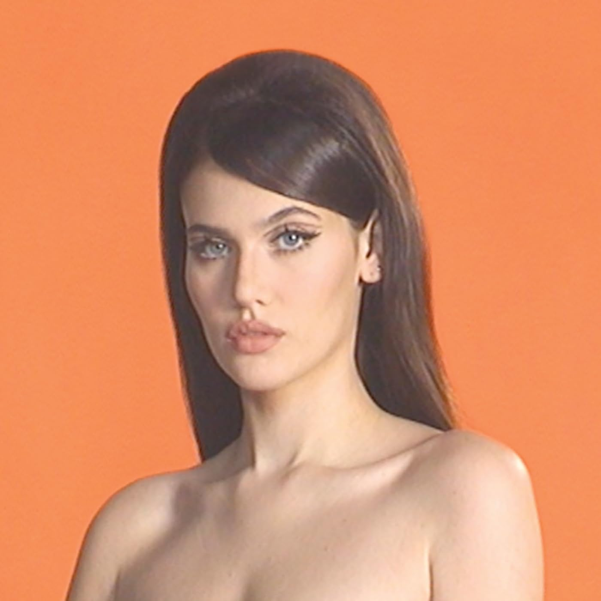
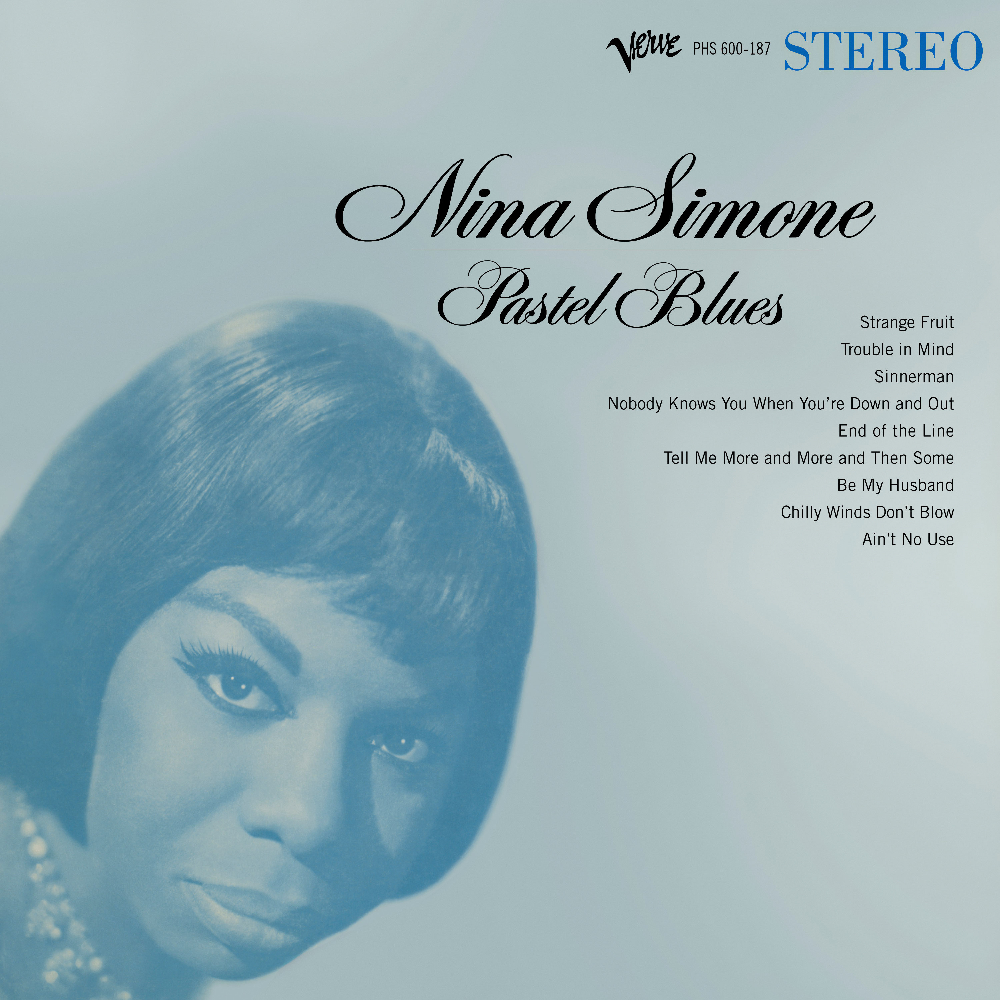
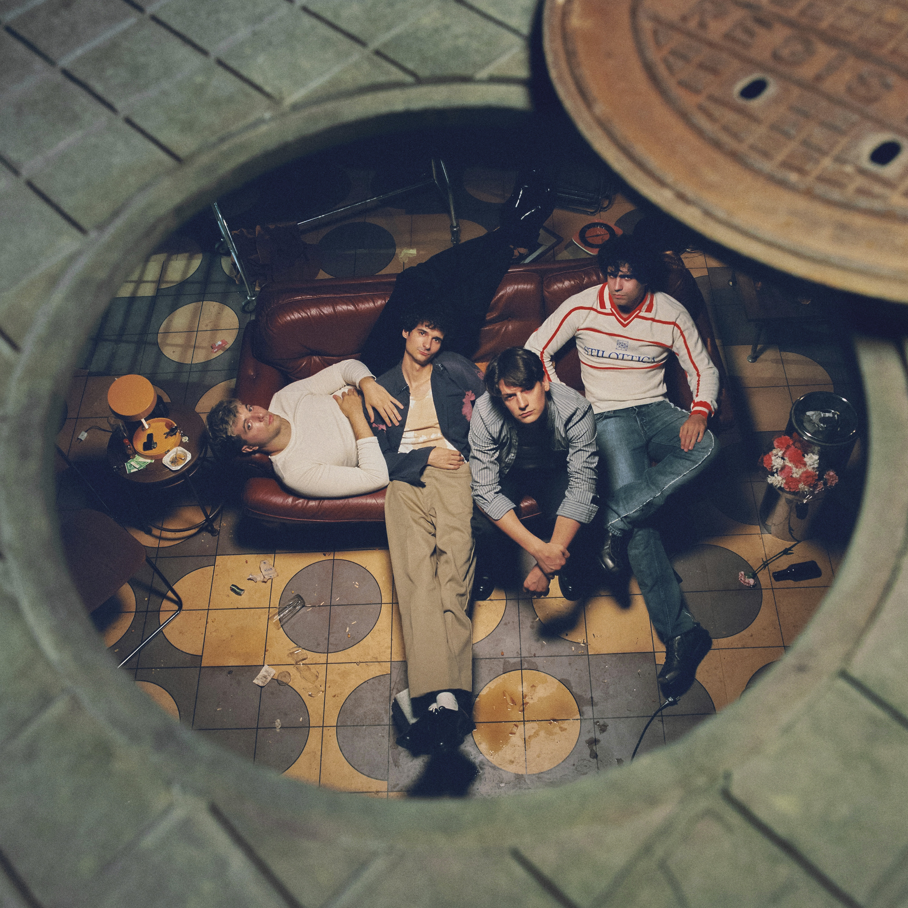
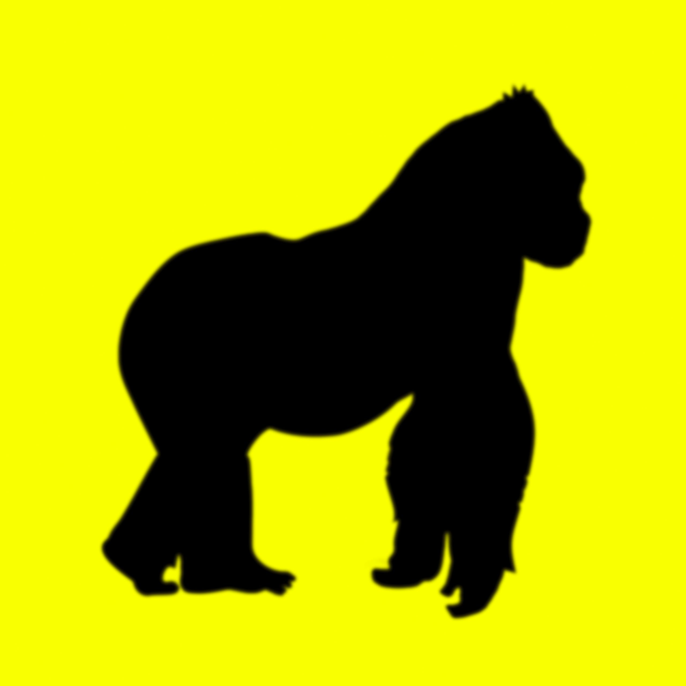
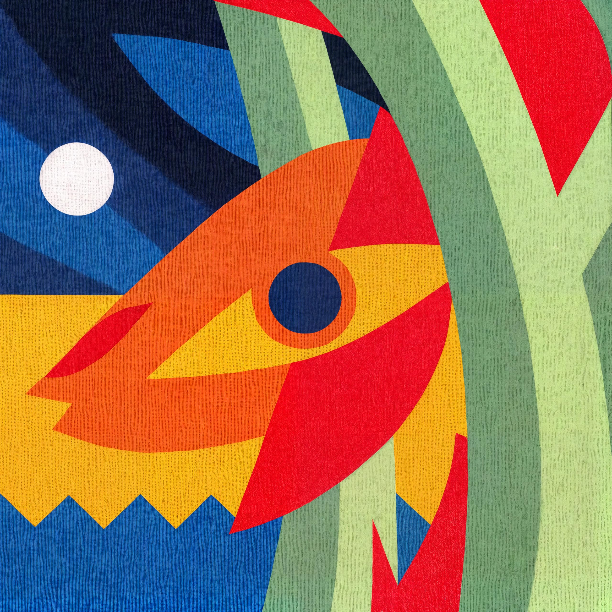
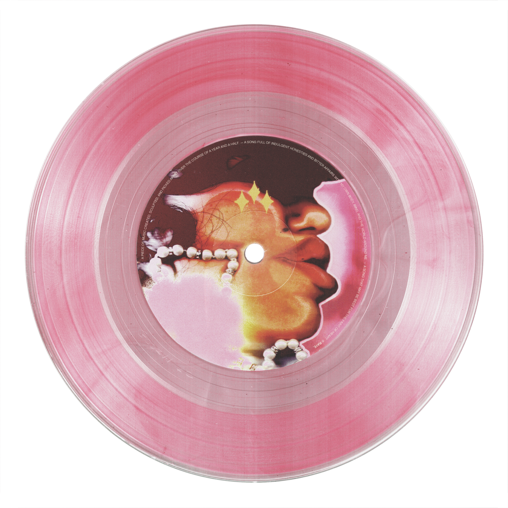
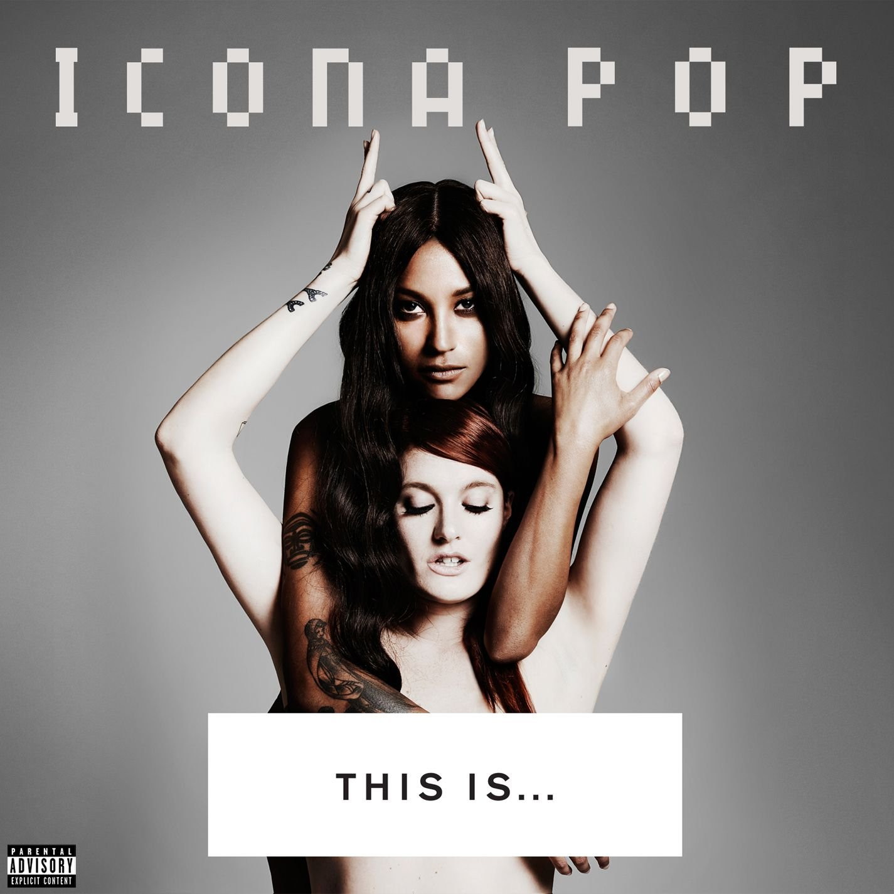
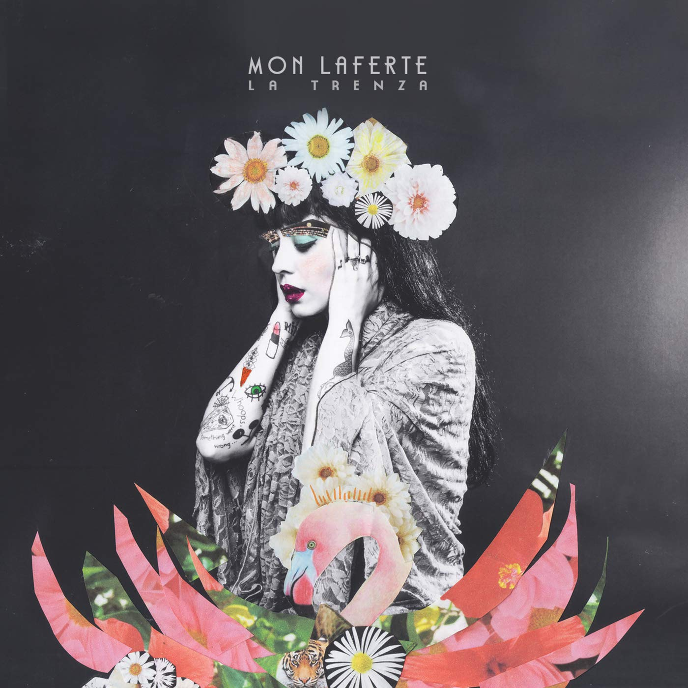
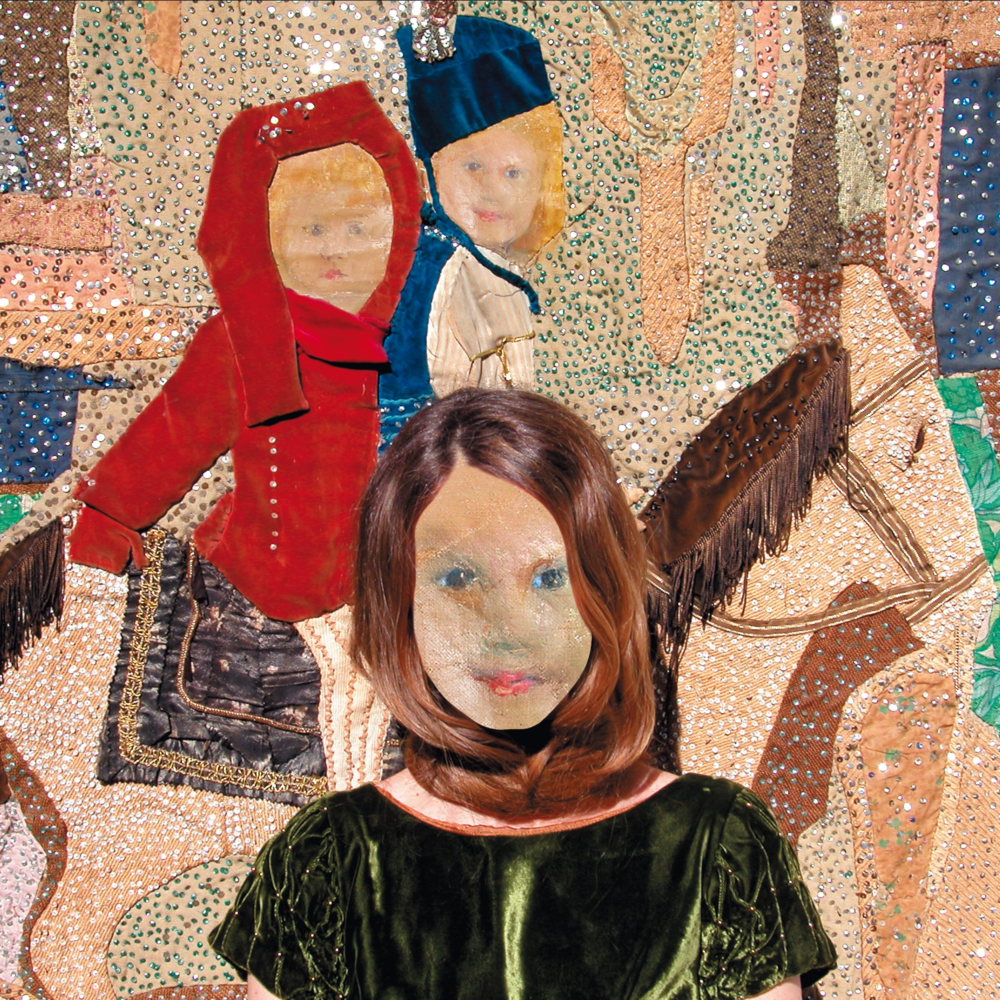

No te dejes llevar solo por el algoritmo
Tu música favorita puede estar fuera de tus recomendaciones. Sal de la playlist de siempre y descubre sonidos que no sabías que te molaban.
Dale al playTu música favorita puede estar fuera de tus recomendaciones. Sal de la playlist de siempre y descubre sonidos que no sabías que te molaban.
Dale al playPrueba un estilo que nunca escuchas. Del flamenco-pop al indie, siempre hay algo que engancha.
Los conciertos pequeños de tu ciudad son la mejor forma de descubrir artistas antes de que sean famosos.
Escucha un álbum de principio a fin, sin saltar canciones. Las joyas suelen estar escondidas.
Apaga el modo aleatorio y busca algo que no te hayan recomendado.
Escucha al menos tres canciones antes de decidir si te gusta.
Pásale tu hallazgo a un amigo. La música mola más si se comparte.

Una novedad para escuchar relajado y dejarte llevar.

Promesa británica que ha dominado las listas con su nuevo álbum cargado de pop, soul y jazz.

Una artista que ha influencia a cientos de artistas actuales y que nos presenta su obra maestra Pastel Blues.

Grupo Español que ofrece propuestas interesantes como su último álbum "Elige tu propia aventura".

Nueva promesa española que con su bedroom pop ha conseguido alcanzar el top 1 de Spotify.

Músico canario que con su último trabajo, un tributo a las islas ha conseguido consolidarse en la escena española.

Cantautora que no deja de sorpreder y crear musica más haya de la melodia destacando su single Genesis.

Duo que consiguió crear una canción "I Love It" que ha pasado a ser el himno de una generación.

Cantante y compositora chilena que fusiona el bolero, el rock y el pop latino a través de una voz potente y letras desgarradoras.
Prueba de que no siempre las canciones versionadas son peores que la original.
Cantante noruega que con sus videoclips y melodias te transportara a otra realidad.

Algo más experimental con la propuesta de la cantante y actriz argentina y su disco Son.